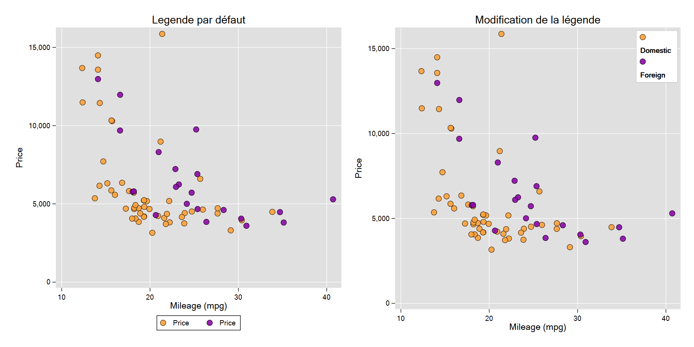
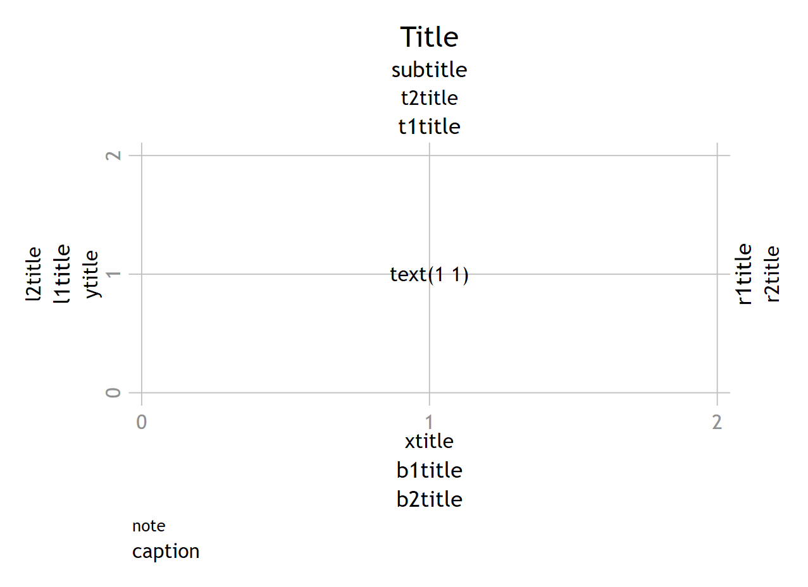

legend(), clegend(), plegend: legend(contenu [options])Options: légende, titre…
Options pour la légende
Les options clegend() et plegend() sont réservées aux graphiques de type courbes de niveau avec une troisième dimension (hauteur, densité…): clegend() pour tw contour et plegend() pour tw contourline. Ces options ont des arguments spécifiques que je ne décrirais pas ici.
Stata utilise par défaut le label de la variable y pour alimenter le contenu de la légende, ce qui peut conduire à un rendu inadapté qu’il faudra corriger manuellement ou à l’aide de macros et fonctions macro (voir chapitre2).
- Ne pas afficher une légende:
legend(off). - Position par défaut: 6 heures (Sud) – à l’extérieur. Modifiable avec
pos(#)etring(0 ou 1). - Pour modifier le nombre de lignes et de colonnes:
row(#)etcol(#). - Pour modifier les labels de la légende:
order(...):order( 1 "label1" 2 "label2" .....)oulab(...):lab(1 "label1") lab(2 "label2") ...)
J’utilise de préférence order plus parcimonieux en parenthèses. L’apparence (gras, italique…) des labels est modifiable avec des balises smcl ; les tailles et couleurs sont également modifiables avec des options pour les textes.
- Les labels peuvent être reportés sous les symboles avec l’option
stack. - On peut modifier l’aspect de la zône (couleur du fond, contour…) avec la sous option **
region(...)our(...).
Le smcl ::: {.callout-note} Le smcl
Le Smcl « Stata Markup Control Langage » est le langage d’édition de Stata, il faut le reconnaître un peu préhistorique (ce n’est pas du Markup pour rien). Pour les graphiques, il permet de modifier les textes des titres, labels des axes, contenu des légendes : gras, italique… changement de police, ajout de formules.
Balise smcl : "{type_option: texte}"
Quelques options/modifications de base :
Gras :
"{bf: texte}"Italique :
"{it: texte}"Gras et italique :
"{bf:{it :texte}}"
Le choix des polices dépend du système d’exploitation. Elles sont sélectionnées par leur type :
"{stSans : texte}"pour type sans serif,"{stSerif : texte}"pour type serif,"{stMono: texte}"pour type mono, et"{stSymbol : texte}"pour les lettres grecques ou les symboles mathématiques. Exemples de polices avec windows : arial (sans serif), times new roman (serif), courrier new ou consolas (mono) et symbol (symbol). On peut également utiliser toutes les typographies disponibles en les sélectionnant en amont, avec la commandegraph set.

Options de la légende :
legend(order(1 "{bf:Domestic}" 2 "{bf:Foreign}") pos(1) ring(0) col(1) region(lw(*.1)) stack )- Le texte de labels a été mis en gras avec une balise Smcl.
- La légende a été positionnée à l’intérieur du graphique avec
ring(0)et à 1 heure avecpos(1). - La légende est reportée sous forme de colonne avec
col(1). - L’épaisseur du contour de la zône a été fortement réduit avec
r(lw(*.1)). - Le texte est positionné sous le symbole avec l’option
stack.
Options pour les titres, notes, texte libre
La majeure partie des options sont déjà précisées plus haut pour les titres des axes. Les titres et les notes sont comme les légendes positionnés par rapport à des valeurs de l’horloge (de 1 à 12). Pour le texte libre on renseigne directement les coordonnées.
title() – subtitle()
Il y a également des options pour des titres qui sont positionnés à gauche, à droite, au dessus (mais en dessous du titre principal) ou en bas du graphique :l1title() et l2title() pour un titre à gauche (l pour left), r1title() et r2title() à droite (r pour right), t1title() et t2title() pour un titre au dessus (t pour top) et ,enfin, b1title() et b2title() pour un titre en bas (b pour bottom) .
Par défaut le titre principal est positionné à 12 heures. Le sous titre est positionné en dessous du titre principal.
note() – caption()
note() est positionné par défaut à 6 heures, caption() en dessous de note(). Ces options permettent de faire des notes de lecture ou de préciser une ou plusieurs sources au graphique.
**text(coordonnées "texte" [,options])
Cette option permet d’afficher un texte dans la zône du graphique en entrant directement les coordonnées (y,x). Les sous options relatives à l’alignement peuvent être assez utiles si on ne veut pas tâtonner avec les coordonnées [on peut passer par les macros pour générer les coordonnées, voir le chapitre dédié].
Le graphique suivant présente les options par défaut (position, taille, couleur) des titres, dont le titre des axes, ainsi qu’un texte libre positionné aux coordonnées (1,1).

Autres options
Changer la police par défaut
On peut paramétrer en amont la typographie utiliser par les graphiques avec la commande graph set
* pour OS windows
graph set window fontface[type_police] "nom_police" Le type de police est: sans, serif, mono, symbol.
Par défaut:
window current
setting default choices
----------------------------------------------------------------
fontface Arial font name
fontfacesans Arial font name
fontfaceserif Times New Roman font name
fontfacemono Courier New font name
fontfacesymbol Symbol font name
---------------------------------------------------Exemple: avec Trebuchet MS pour fontface et consolas pour mono
graph set window fontface"trebuchet MS"
graph set window fontfacemono "consolas"
/*
window current
setting default choices
------------------------------------------------------------------------
fontface trebuchet MS font name
fontfacesans Arial font name
fontfaceserif Minion Pro font name
fontfacemono consolas font name
fontfacesymbol Symbol font name
------------------------------------------------------------------------
*/Taille du graphique
Ces options sont particulièrement utiles pour les graphiques combinés lorsque l’empilement de plusieurs graphiques provoque un effet d’écrasement des axes (axes x plus court si plusieurs colonnes par exemple).
xsize(#)-ysize(#): en pouce (max=20). Peut s’appliquer à un graphique individuel, ou plus souvent à la commandegraph combinepour retrouver un bon ratio x/y pour les sous graphiques.fxize(#)–fysize(#): # en %. A utiliser seulement pour combiner des graphiques. Avant la combinaison on peut appliquer ces options aux graphiques individuels pour contrôler les ratios x/y. Cela permet plus de liberté dans les compositions des graphiques combinés.
Une application est donnée plus loin dans la section dédiée aux graphiques combinés.
Modifier automatiquement la taille du texte et des symboles
scale(#) – **iscale(#)*
Permet de modifier la taille des éléments types texte et symboles générés par un graphique. Utile lorsque le texte d’une légende sort du contour. Valeur de référence=1.
Pour la commande graph combine, on utilise l’option iscale() qui appliquera la modification à tous les sous graphiques.
Options d’affichage et d’enregistrement
nodraw
Equivalent dequietlypour les graphiques, il permet de ne pas afficher le graphique dans l’éditeur. Plutôt à utiliser pour les sous-graphiques qui seront combiner ou associer à l’optionsaving(). Cela permet de gagner un temps d’exécution non négligeabe.name():name(nom_graph [,replace])
Permet de sauvegarder temporairement le graphique sur la session. On peut privilégier cette option pour combiner des graphiques ultérieurement.
Utiliser de préférence l’optionreplacepour écraser un graphique déjà en mémoire et avec un même nom, à défaut de quoi il faut supprimer le ou les graphiques en mémoire avecgraph drop noms_graphsougraph drop _allen amont.graph display [nom_graph]
Permet d’afficher un graphique en mémoire (non sauvegardé en dur). Si le nom du graphique n’est pas précisé, le dernier graphique généré est ouvert dans l’éditeur de graphique.
Exemple:
graph display g1saving("path/nom"[, replace])
Même principe quename(), mais sauvegarde en dur sur le disque.graph use "nom_graph"
Permet d’afficher un graphique enregistré.Exporter un graphique
export nom_graph.format [, replace name(nom du graphique ouvert dans l’éditeur)]. Stata peut convertir un graphique en plusieurs format : jpeg, png, gif (seulement mac), svg…. On peut le faire directement dans l’éditeur de graphique ou passer par la ligne de commande export. Pour utiliser cette commande, le graphique doit être ouvert dans l’éditeur. Les formats d’exportation on des options propres.
Exemples:
tw line y x
graph export graphpng.png
tw line y x, name(g1,replace)
graph export graphpng.png, replace name(g1)